Chapter 1 · Seeing & Light (Grades K–2)
Seeing Light Lab
Vision starts with light. Discover how your eyes catch light rays, how brightness helps us see edges, and how simple shapes combine into the world around us.
Big question: what has to happen for you to see a ball?
- ☀️Light comes from a source.
- ⚽It bounces off things.
- 👁️Some of it goes into your eye.
- 🧠Your brain finds edges and shapes.
Light Travels Into Your Eye
To see something, light has to travel from a light source, bounce off the thing, and go into your eye.
A long time ago, many smart people thought it worked the other way: that your eyes shoot out invisible beams, like a flashlight. About 1,000 years ago, the scientist Ibn al-Haytham tested ideas like this and showed that light comes into the eye. Press the buttons and see which idea explains a dark closet.
The lamp makes light. Light bounces off the ball, and some of it goes into your eye. You see the ball!
Makes light, or bounces light?
Most things you see do not make their own light. They bounce (reflect) light that came from somewhere else. Vote with your class, then press a button.
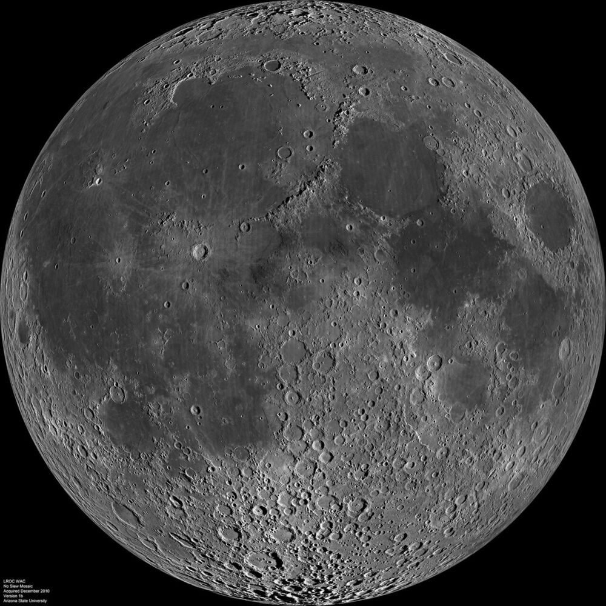

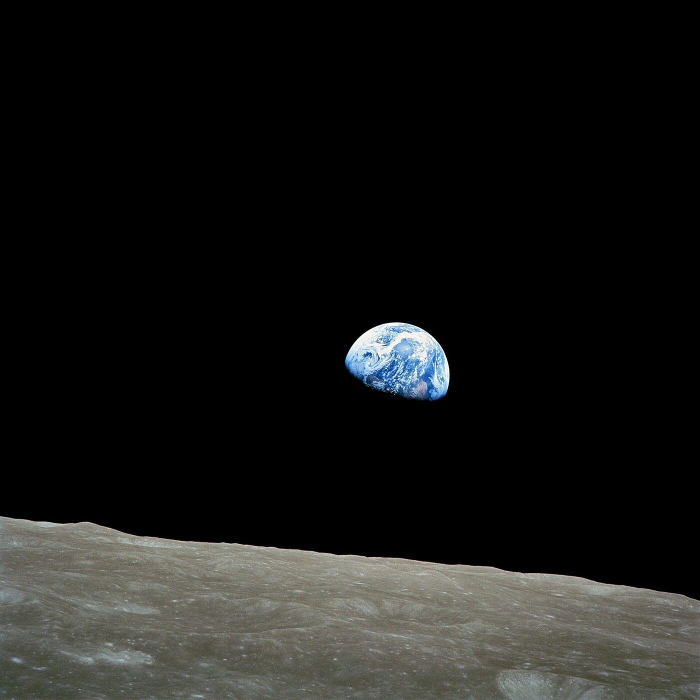

Teacher notes
The "eye beam" (extramission) idea goes back to Plato and Euclid's Optics (c. 300 BC). Ibn al-Haytham's Book of Optics (written 1011–1021 in Cairo) argued from experiments, including bright light that hurts and afterimages, that vision is light entering the eye. Studies still find many children and some adults hold an eye-beam picture, so the closet test is worth doing for real.
Light bounces off a matte object in every direction (diffuse reflection); only the rays that happen to reach your pupil count. That is why everyone in the room can see the same ball. The Moon's average reflectance (albedo) is about 0.12.
Your Pupil Is a Doorway for Light
The black dot in your eye is a hole called the pupil. It opens wide in the dark and shrinks in bright light.
The pupil looks black because light goes in and doesn't come back out. The colored ring around it, the iris, is a muscle that makes the hole bigger or smaller. Slide from starlight to sunshine and watch, drawn to real size.
- Light
- 🏫 Classroom
- Pupil width
- about 3 mm
- Light let in
- 2× a sunny-day pupil
Indoors the pupil is medium-sized.
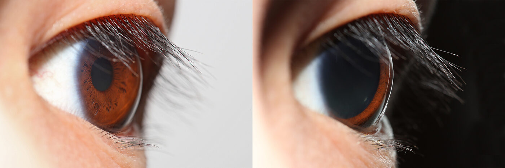

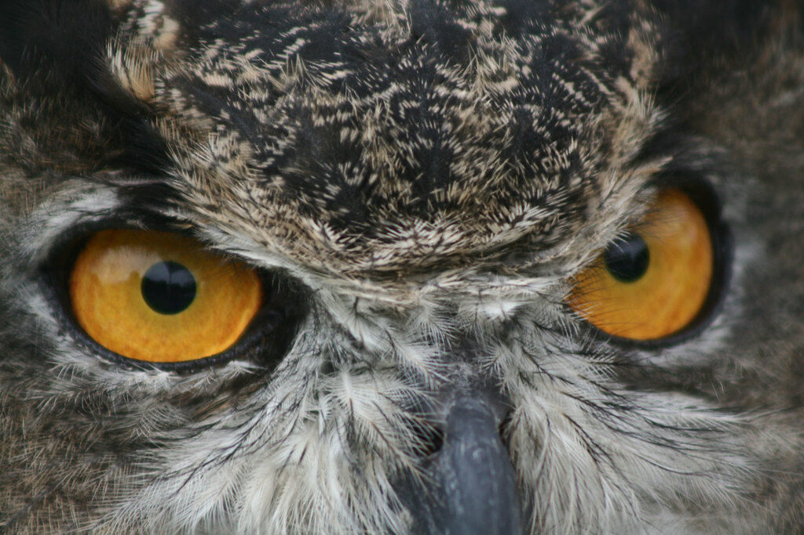
Teacher notes
Pupil sizes come from the Moon & Spencer (1944) formula, D = 4.9 − 3·tanh(0.4·log₁₀ B) mm, with B the luminance in blondels (1 blondel = 1/π cd/m²), as reviewed by Watson & Yellott (2012). It runs from about 2 mm in sunshine to about 8 mm in the dark; children's pupils run a little larger and older adults' smaller. Light let in grows with the pupil's area (width squared), so a 7.5 mm pupil lets in about 13 times as much as a 2 mm one.
The pupil reflex starts about a quarter second after the light changes and takes about a second to shrink; widening is slower, several seconds, so the sim widens slowly too. The big change in the dark is the retina, not the pupil: full dark adaptation takes 20–30 minutes, and daylight can be more than a million times brighter than starlight, far more than a 16-fold change in pupil area could cover.
Inside Your Eye: An Upside-Down Picture
The front of your eye bends light to make a tiny picture on the back of your eye. The picture is upside down!
The back of your eye is lined with the retina, a thin layer of light-catching cells. Your brain reads the picture and you never notice it's flipped. Move the tree closer and farther.
The tree's top lands at the bottom of the retina. The picture is upside down and much smaller.
Rods and cones: the light catchers
Your retina has two kinds of light-catching cells. Rods work in dim light but can't tell colors apart. Cones see color but need brighter light. You have about 20 rods for every cone.
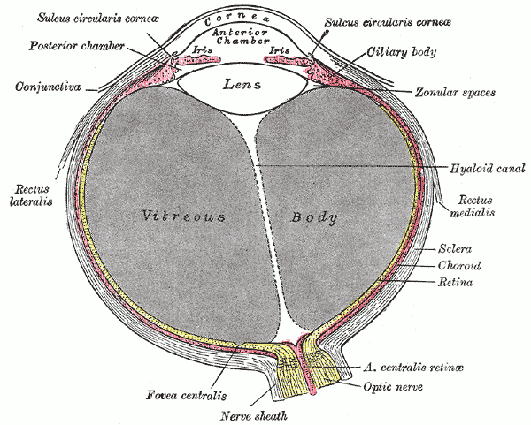

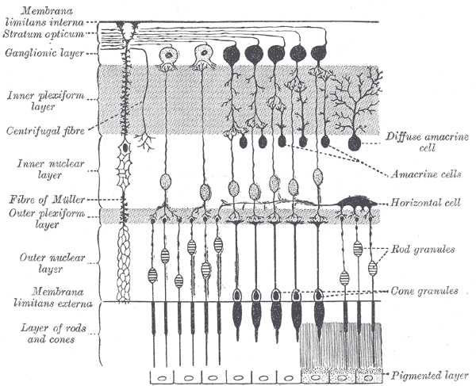

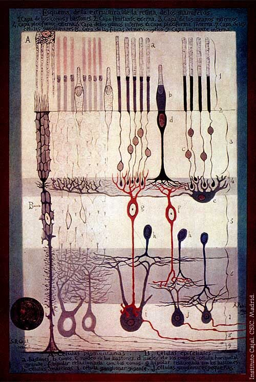

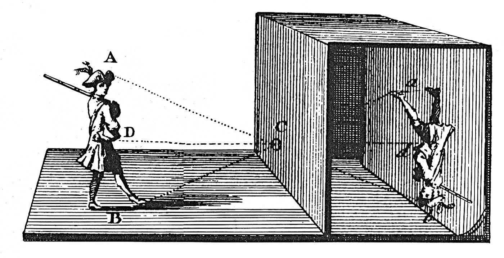

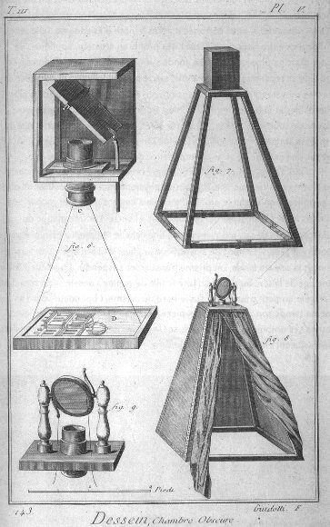

Teacher notes
The cornea does about two-thirds of the bending and the lens the rest (and changes shape to focus near or far). Johannes Kepler first explained the upside-down retinal image in 1604; Christoph Scheiner soon showed it directly: he scraped the back of an ox's eye thin and saw the little upside-down picture on it. The diagram uses the eye's nodal point, so rays from each point of the tree cross there and land on the curved retina.
Counts: about 92 million rods and 4.6 million cones per human retina (Curcio et al., 1990). Cones cluster in the fovea, the spot you look straight at; rods fill the rest, which is why a faint star is easier to see from the corner of your eye.
Light Makes Edges Appear
Your eye finds things by looking for edges: places where bright meets dark.
Slide from starlight to sunshine. In dim light, only your rods are working, so colors fade to gray and edges get fuzzy. Then press Edge view to see what your eye's edge-finding cells notice.
Look at the gray owl: it is almost as bright as the wall behind it, so it has hardly any edge, even in sunshine. That's how camouflage works. Want to see your brain get brightness wrong? Try the Optical Illusions lesson.
Teacher notes
The scene is computed, not painted: each color is split into what cones see (photopic luminance) and what rods see (scotopic luminance, Larson et al. 1997 approximation). Below about 0.01 cd/m² the picture is pure rod vision, above about 5 cd/m² pure cone vision, blended in between (mesopic). Rods barely respond to red, so the apple darkens first: the Purkinje shift, described by Jan Purkyně in 1825. The grain at starlight stands in for photon noise: so few photons arrive that the picture really is speckled.
Edge view runs a Sobel filter, which marks where brightness changes quickly. David Hubel and Torsten Wiesel found in 1959 that cells in the visual cortex fire for edges at particular angles (Nobel Prize, 1981); the retina itself already boosts edges by comparing each spot with its neighbors.
Edges Make Shapes, Shapes Make Things
Your brain puts edges together into shapes, and shapes together into things you know.
Pick a picture, then press 1 Edges. Can the class guess what it is from the edges alone? Then press 2 Shapes and 3 Thing. Artists use the same trick: they sketch simple shapes first.
Who Figured Out How We See?
- Euclid, in Greece, wrote Optics, a geometry of sight that pictured rays going out of the eye.
- Ibn al-Haytham, in Cairo, wrote the Book of Optics: light travels in straight lines from objects into the eye. He tested his ideas with experiments, including a dark room with a small hole.
- Ibn al-Haytham's book was printed in Latin in Europe as Opticae Thesaurus, and scientists there studied it for centuries.
- Johannes Kepler explained that the eye's lens makes an upside-down picture on the retina.
- Jan Purkyně noticed red flowers look darker than blue ones at dusk, a clue that dim-light vision uses different cells.
- Santiago Ramón y Cajal drew the retina's rods, cones and nerve cells from the microscope.
- David Hubel and Torsten Wiesel found brain cells that fire for edges at certain angles. They won the Nobel Prize in 1981.
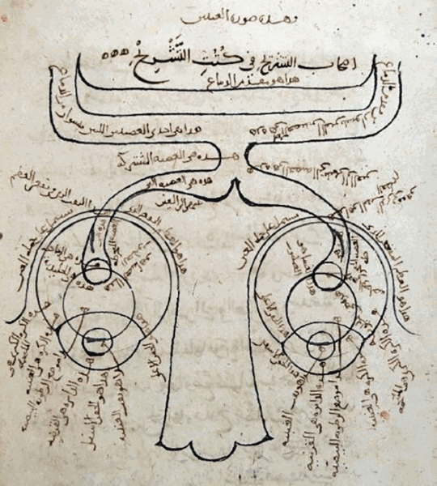

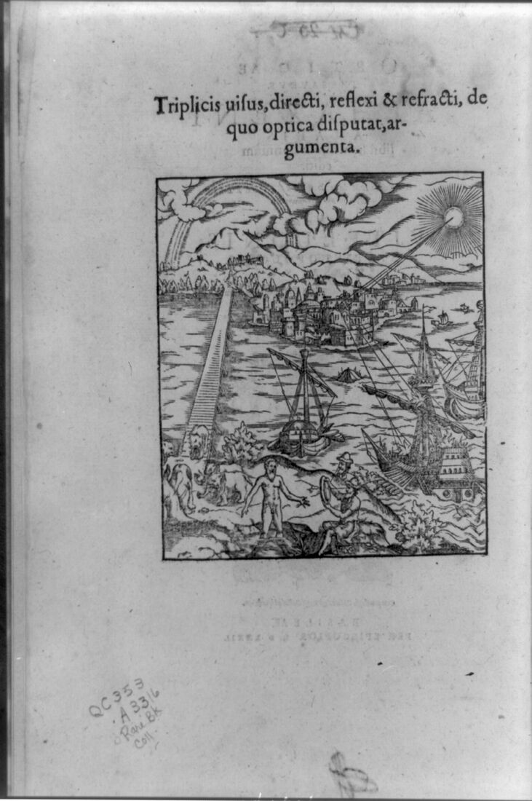
🌟 What We Learned Today
- Light comes in: we see when light from a source bounces off a thing and goes into our eyes. No light, no seeing.
- Pupils adapt: about 8 mm wide in the dark to catch light, about 2 mm in sunshine.
- The picture is upside down: the cornea and lens make a tiny flipped picture on the retina, and the brain reads it.
- Rods and cones: rods work in dim light without color; cones see color in bright light.
- Edges, then shapes, then things: your brain finds where bright meets dark, then builds shapes and names what it sees.
Sources
- Ibn al-Haytham, Kitāb al-Manāẓir (Book of Optics), c. 1011–1021; Latin ed. F. Risner, Opticae Thesaurus (Basel, 1572).
- J. Kepler, Ad Vitellionem Paralipomena (Frankfurt, 1604), ch. 5.
- P. Moon & D. E. Spencer, "On the Stiles–Crawford effect," J. Opt. Soc. Am. 34 (1944); reviewed in A. B. Watson & J. I. Yellott, "A unified formula for light-adapted pupil size," Journal of Vision 12(10):12 (2012).
- C. A. Curcio et al., "Human photoreceptor topography," J. Comp. Neurol. 292 (1990): 497–523.
- G. W. Larson, H. Rushmeier & C. Piatko, "A visibility matching tone reproduction operator for high dynamic range scenes," IEEE TVCG 3(4) (1997).
- D. H. Hubel & T. N. Wiesel, "Receptive fields of single neurones in the cat's striate cortex," J. Physiol. 148 (1959): 574–591.
- National Eye Institute, "How the Eyes Work," nei.nih.gov.
Photos are public domain (NASA, U.S. Fish and Wildlife Service, and works published before 1930), except the pupil photo, which is CC BY-SA 4.0. Credits are under each picture. All images are copied onto this site.